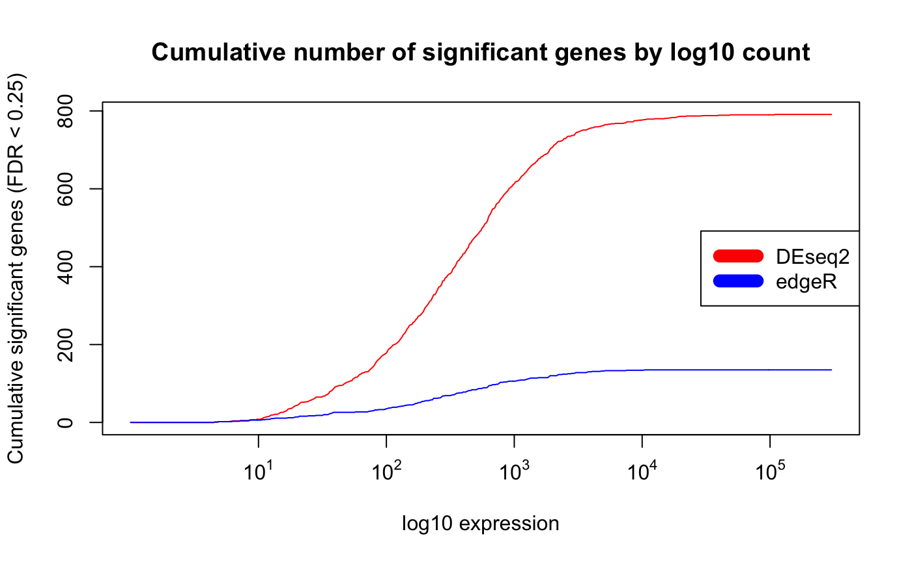
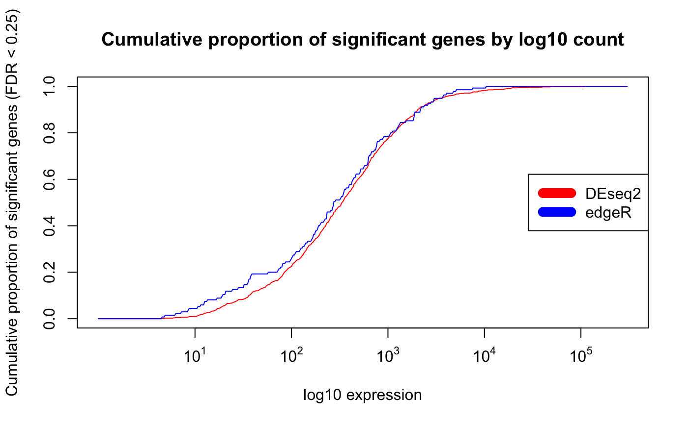
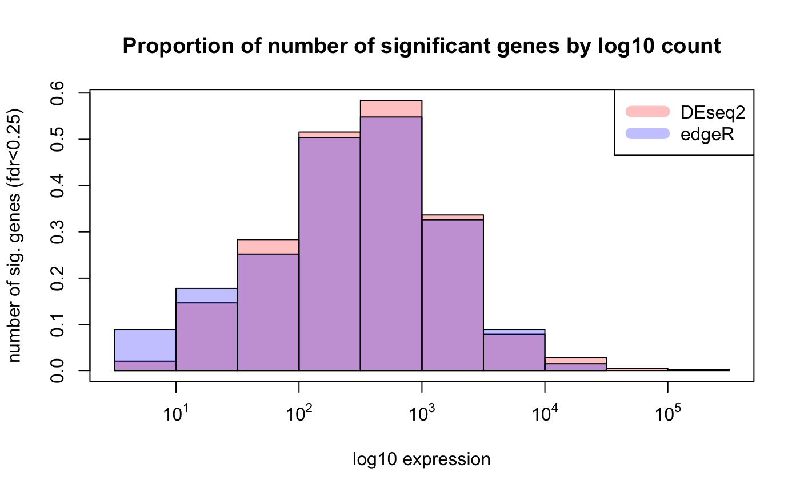
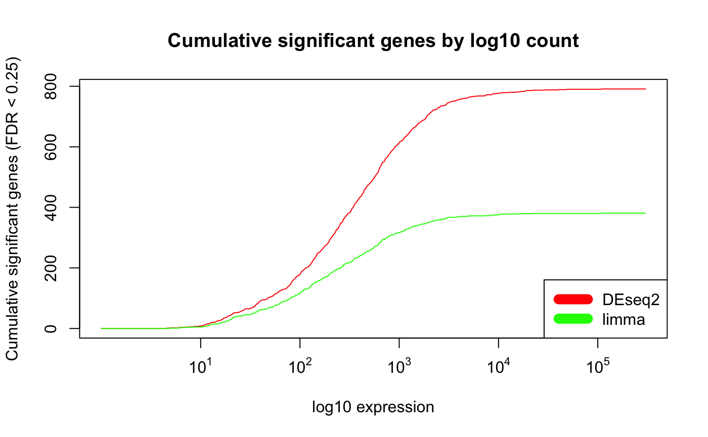
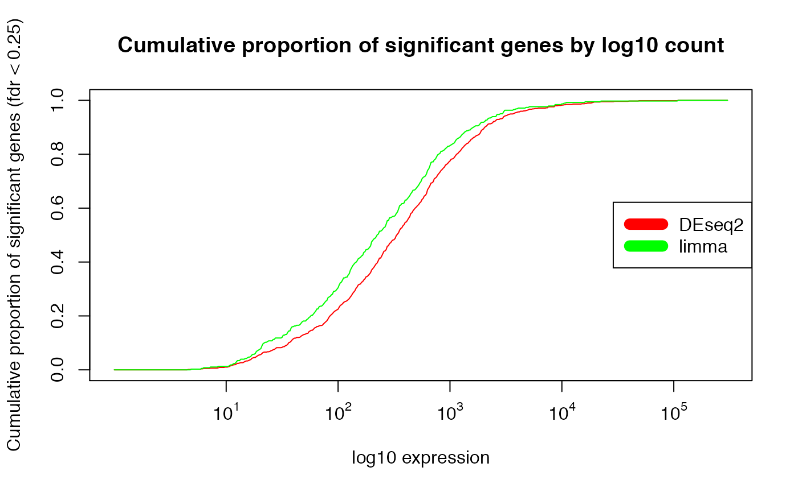
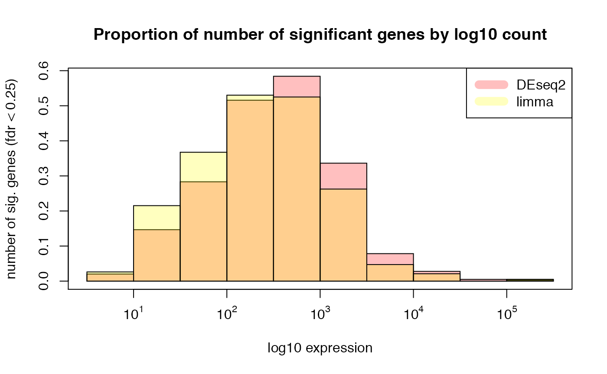
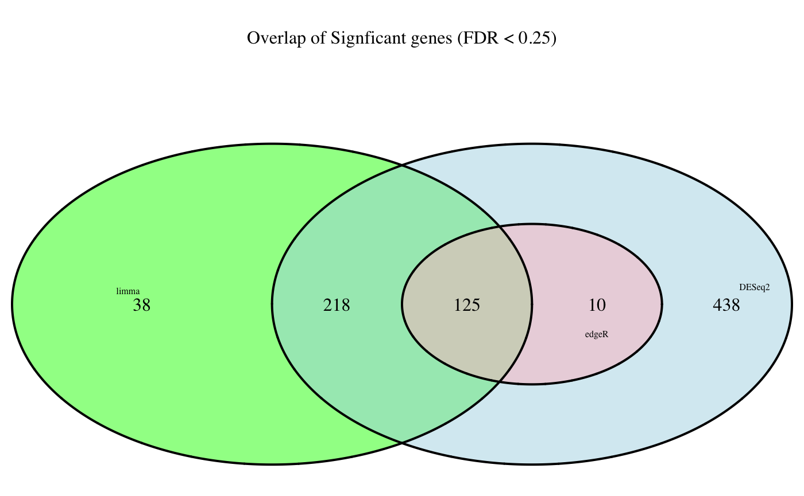

vignettes/docs/DiffanalysisRNAseqComparison.Rmd
DiffanalysisRNAseqComparison.RmdIn this module, we show application of different tools for differential analysis to count data from RNA-sequencing.
library(BS831)
require(Biobase)
require(limma)
require(edgeR)
require(DESeq2)
require(biomaRt)
require(VennDiagram)Let’s start by writing wrapper functions for each tool. This is useful so as to have a go-to place where to be reminded of the sequences of commands needed to run a given tool.
data(zebrafish_htseq_raw_counts_eSet)
data(zebrafish_cufflinks_counts_fpkm_eSet)
## see script code/createDatasets/createZebra.R for how these datasets were processed
esetRaw <- zebrafish_htseq_raw_counts_eSet
esetFPKM <- zebrafish_cufflinks_counts_fpkm_eSet
## make sure esets are matched
if ( any(featureNames(esetRaw)!=featureNames(esetFPKM)) ) stop( "featureNames(esetRaw)!=featureNames(esetFPKM)" )
if ( any(sampleNames(esetRaw)!=sampleNames(esetFPKM)) ) stop( "sampleNames(esetRaw)!=sampleNames(esetFPKM)" )
## DMSO vs pregnemolone (PN) in both control samples and samples injected with MO
## ..(morpholino antisense oligonucleotides)## remove those genes without at least 1 read per million in at least 'n' samples
## n = least amount of samples in a condition (4 in this dataset)
removeLowExpression <- function(eset, class_id)
{
groups <- pData(eset)[,class_id]
min.samples <- min( sapply(levels(groups), function(x){length(which(groups %in% x))}) )
rpm <- colSums(exprs(eset))/1000000
filter_ind <- t(apply(exprs(eset), 1,function(x) {x >rpm}))
filter_ind_rowsums <- apply(filter_ind, 1, sum)
return(eset[filter_ind_rowsums > min.samples,])
}
esetRaw1 <- removeLowExpression(eset=esetRaw, class_id = "Group")
esetFPKM1 <- esetFPKM[featureNames(esetRaw1),]## see wrappers at code/diffanalWrappers.R
## run deseq2
res_deseq2 <- run_deseq(eset=esetRaw1, class_id="Group", control="Ctrl_DMSO", treatment="Ctrl_PN")
## run edgeR htseq counts
res_edgeR <- run_edgeR(eset=esetRaw1, class_id="Group", control="Ctrl_DMSO", treatment="Ctrl_PN")
## run limma with cufflinks fpkm log2-transformed data
res_limma <- run_limma(eset=esetFPKM1, class_id="Group", control="Ctrl_DMSO", treatment="Ctrl_PN")## cumulative number of sig genes below mean expression]
## checking again
all(rownames(res_deseq2)==rownames(res_edgeR))## [1] TRUE## [1] TRUEall(rownames(res_deseq2)==featureNames(esetRaw1))## [1] TRUE## let's create a summary table for easy comparison of the results
res_summary <- data.frame(deseq2_padj=res_deseq2$padj,
edgeR_padj=res_edgeR$table$FDR,
limma_padj=res_limma$adj.P.Val,
deseq2_logfc=res_deseq2$log2FoldChange,
edgeR_logfc=res_edgeR$table$logFC,
limma_logfc=res_limma$logFC,
mean_exprs=rowMeans(log10(exprs(esetRaw1)+1)))
## for plotting purposes
exprs_breaks <- seq(0, log10(max(as.numeric(exprs(esetRaw1)+1))), 0.01)
## cumulative significant genes vs. log10 mean expression
min.fdr <- 0.25
csg_DESeq2 <- sapply(exprs_breaks,
function(x) nrow(subset(res_summary, mean_exprs < x & deseq2_padj < min.fdr)))
csg_edgeR <- sapply(exprs_breaks,
function(x) nrow(subset(res_summary, mean_exprs < x & edgeR_padj < min.fdr)))
csg_limma <- sapply(exprs_breaks,
function(x) nrow(subset(res_summary, mean_exprs < x & limma_padj < min.fdr)))
plot(exprs_breaks, csg_DESeq2,
type = "l",
col = "red",
xaxt="n",
xlab = "log10 expression",
ylab = paste0("Cumulative significant genes (FDR < ",min.fdr,")"),
main = "Cumulative number of significant genes by log10 count")
lines(exprs_breaks, csg_edgeR, type = "l", col = "blue")
labels <- sapply(1:5,function(i) as.expression(bquote(10^ .(i))))
axis(1,at=1:5,labels=labels)
legend("right", c("DEseq2", "edgeR"),col=c("red", "blue", "yellow"), lwd=10)
## normalization to proportion of significant genes instead of absolute number
##
plot(exprs_breaks, csg_DESeq2/max(csg_DESeq2),
type = "l",
col = "red",
xaxt="n",
xlab = "log10 expression",
ylab = paste0("Cumulative proportion of significant genes (FDR < ", min.fdr, ")"),
main = "Cumulative proportion of significant genes by log10 count")
lines(exprs_breaks, csg_edgeR/max(csg_edgeR), type = "l", col = "blue")
labels <- sapply(1:5,function(i) as.expression(bquote(10^ .(i))))
axis(1,at=1:5,labels=labels)
legend("right", c("DEseq2", "edgeR"), col=c("red", "blue", "yellow"), lwd=10)
## histogram of proportion of sig genes by mean expression
##
hist(subset(res_summary, deseq2_padj < min.fdr)[, "mean_exprs"], freq=FALSE,
col=rgb(1,0,0,1/4), xlab = "log10 expression",
ylab = "number of sig. genes (fdr<0.25)",
main = "Proportion of number of significant genes by log10 count", xaxt = "n")
hist(subset(res_summary, edgeR_padj < min.fdr)[, "mean_exprs"],freq=FALSE,
col=rgb(0,0,1,1/4), add = T)
labels <- sapply( 1:5,function(i) as.expression(bquote(10^ .(i))) )
axis(1,at=1:5,labels=labels)
box()
legend("topright", c("DEseq2", "edgeR"),
col=c(rgb(1,0,0,1/4), rgb(0,0,1,1/4), rgb(1,1,0,1/4)), lwd=10)
plot(exprs_breaks, csg_DESeq2,
type = "l",
col = "red",
xaxt="n",
xlab = "log10 expression",
ylab = paste0("Cumulative significant genes (FDR < ", min.fdr, ")"),
main = "Cumulative significant genes by log10 count")
lines(exprs_breaks, csg_limma, type = "l", col = "green")
labels <- sapply(1:5,function(i) as.expression(bquote(10^ .(i))))
axis(1,at=1:5,labels=labels)
legend("bottomright", c("DEseq2", "limma"), col=c("red", "green"), lwd=10)
plot(exprs_breaks, csg_DESeq2/max(csg_DESeq2),
type = "l",
col = "red",
xaxt="n",
xlab = "log10 expression",
ylab = paste0("Cumulative proportion of significant genes (fdr < ", min.fdr, ")"),
main = "Cumulative proportion of significant genes by log10 count")
lines(exprs_breaks, csg_limma/max(csg_limma), type = "l", col = "green")
labels <- sapply(1:5,function(i) as.expression(bquote(10^ .(i))))
axis(1,at=1:5,labels=labels)
legend("right", c("DEseq2", "limma"), col=c("red", "green"), lwd=10)
## histogram of proportion of sig genes by mean expression
hist(subset(res_summary, deseq2_padj < min.fdr)[, "mean_exprs"], freq=FALSE,
col=rgb(1,0,0,1/4), xlab = "log10 expression",
ylab = paste0("number of sig. genes (fdr < ", min.fdr, ")"),
main = "Proportion of number of significant genes by log10 count", xaxt = "n")
hist(subset(res_summary, limma_padj < min.fdr)[, "mean_exprs"],freq=FALSE,
col=rgb(1,1,0,1/4), add = T)
labels <- sapply( 1:5, function(i) as.expression(bquote(10^ .(i))) )
axis(1,at=1:5,labels=labels)
box()
legend("topright", c("DEseq2", "limma"), col=c(rgb(1,0,0,1/4),rgb(1,1,0,1/4)), lwd=10)
## looking at overlap of significant genes from the three tools
##
diff_list <- list(DESeq2 = rownames(subset(res_summary, deseq2_padj < min.fdr)),
edgeR = rownames(subset(res_summary, edgeR_padj < min.fdr)),
limma = rownames(subset(res_summary, limma_padj < min.fdr)))
fill <- c("light blue", "pink", "green")
size <- rep(0.5, 3)
venn <- venn.diagram(x = diff_list,
filename = NULL,
height = 2000,
width = 2000, fill = fill,
cat.default.pos = "text",
cat.cex = size,
main = paste0("Overlap of Signficant genes (FDR < ", min.fdr, ")"))
grid.draw(venn)